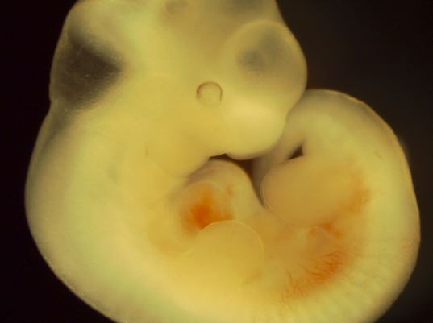

Dead Embryos Give Life
Living stem cells from arrested embryos?
Asma Shaikh
Spring 2007

While scientists were looking for ways to maneuver around the
long-running ethical debate over stem cell research, they stumbled upon
a novel idea. Until now, it was just that – an idea. However,
researchers have recently demonstrated the use of dead embryos to
obtain living stem cells as a reality. Many contend that the new
discovery may bring an end to the greatest scientific and moral
quandary of our generation; others argue that it only raises more
perplexing questions in this arena for years to come.
According to the September 2006 issue of the online
journal Stem Cells, Miodrag Stojkovic, MD, PhD, and colleagues from the
Prince Felipe Research Center in Valencia, Spain were able to extract
pluripotent human embryonic stem cells (hESCs) from dead embryos. These
stem cells can differentiate into any type of cell, be it neural,
renal, or skin. The group isolated thirteen surplus embryos acquired
via in vitro fertilization that were deemed to have “arrested
irreversibly,” meaning the blastomeres had not undergone any cleavage
division for at least 24 to 48 hours after conception. From one of
these so-called dead embryos, the scientists derived an embryonic stem
cell line. Through reverse transcription- polymerase chain reaction
analysis, staining, and karyotyping, the team found that all hESCs from
the arrested embryo expressed pluripotency marker genes and were of
normal genetic make-up.
These findings have profound implications for both
the science and the ethics of embryonic stem cell research. We now know
that arrested embryos, which would otherwise be discarded, have
proliferative potential. Given this fact, dead embryos could serve as
another avenue for obtaining living embryonic stem cells along with the
common sources, excess and donated embryos from fertility clinics. In
countries with restrictions placed on living embryonic stem cell
research due to ethical considerations, such as the United States, this
result may allow vital studies of human development, disease, and drug
design to continue. However, with this new information, the possibility
remains that investments in current research may decline. Stojkovic and
other proponents want to make it clear that their approach should not
become competition for existing methods that have also shown to be
promising in past years.
Moreover, not everyone in the scientific community
has wholeheartedly embraced the practical use of these findings. For
example, in a September 22, 2006 article published in the periodical
Mercury News, George Daley, MD, PhD, of the Harvard Stem Cell Institute
questioned whether the arrested embryos may have been genetically
abnormal, causing the hESCs derived from them to be of questionable
research value. In response to this claim, Stojkovic explains that in
addition to the defective blastomeres within the dead embryo that are
responsible for developmental arrest, other remaining blastomeres are
genetically viable for further differentiation.
In fact, the theory behind Stojkovic’s work is not
new. According to a September 24, 2004 article in the British
periodical The Observer, Donald Landry, MD, PhD, of the Columbia
University Medical Center in New York concluded that the issue was
settled soon after he first proposed the possibility of this technique
in 2004. “Regardless of how you feel about personhood for embryos, if
the embryo is dead, then the issue of personhood is resolved,” Landry
argues. He equates the ethics of human embryonic stem cell production
to that of organ donation, claiming that if one believes that it is
morally sound to take living organs from dead people, then they should
also believe that it is ethically permissible to take live cells from
dead embryos.